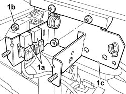
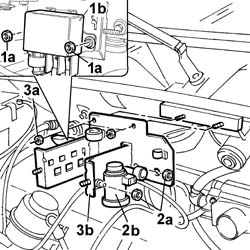

1080C16 RELAY MOUNTING BRACKET - R.R.
- Path
- Procedures > 10 ENGINE UNIT > 1080 EXHAUST EMISSION CONTROL SYSTEM > 1080C EXHAUST GAS RECIRCULATION SYSTEM (E.G.R.) > 1080C16 RELAY MOUNTING BRACKET - R.R.
- Kind
- repair procedure (removal / refitting; the operation number is the code)
- Applies to
- engines: 2.0 16V, 2.8 JTD 8V; all production periods
- Interactive page
- https://sloeber94.github.io/elrnDB-fDct/en/#/244000894
Applies to: engines: 2.0 16V; all production periods
 Removing
Removing
 Refitting
RefittingOp. 1080C17 E.G.R. VALVE MODULATOR COVER AND RELAY UNIT - R.R.
1. Release the relays (1a) from the bracket and move them aside, undo the fixing nuts (1b) and remove the bracket (1c).

Applies to: engines: 2.0 16V; all production periods
Refitting
Removing- Fit the bracket in the housing.
- Tighten the retaining nuts.
- Fit the relays removed previously in their housings.
Op. 1080C17 E.G.R. VALVE MODULATOR COVER AND RELAY UNIT - R.R.
Applies to: engines: 2.8 JTD 8V; all production periods
Removing
RefittingVedere in Op. 1080C17
1. Undo the fixing nuts (1a) and move the heat flange relay (1b) aside.
2. Undo the fixing nuts (2a) and move the EGR valve modulator (2b) aside.
3. Undo the fixing nuts (3a) and remove the mounting bracket (3b).

Applies to: engines: 2.8 JTD 8V; all production periods
Refitting
RemovingPlace the mounting bracket in position.
Tighten the bracket fixing nuts.
Fit the EGR valve modulator and tighten the fixing nuts.
Fit the heat flange relay in place and tighten the fixing nuts.
Vedere in Op. 1080C17